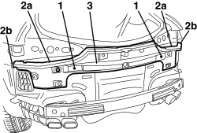

7055B75 REAR BUMPER CENTRE MOUNT - R R
- Path
- Procedures > 70 FITTINGS > 7055 MOULDINGS AND PROTECTION > 7055B EXTERIOR PROTECTIONS > 7055B75 REAR BUMPER CENTRE MOUNT - R R
- Kind
- repair procedure (removal / refitting; the operation number is the code)
- Applies to
- all engines; all production periods
- Interactive page
- https://sloeber94.github.io/elrnDB-aBrrSpdr/en/#/946002686
Applies to: all engines; all production periods
 Removing
Removing
 Refitting
Refitting- Remove both rear light clusters.
Op. 5540A44 REAR LIGHT CLUSTER (ONE), LEFT OR RIGHT - R.R.
1. Undo the bolts.
2. Cut the sealant bead (2a) in the areas (2b).
3. Keep the support.

Applies to: all engines; all production periods
Refitting
Removing- Check that the support is not damaged.
- Fit the side support and tighten the bolts.
- Renew the sealant strip.